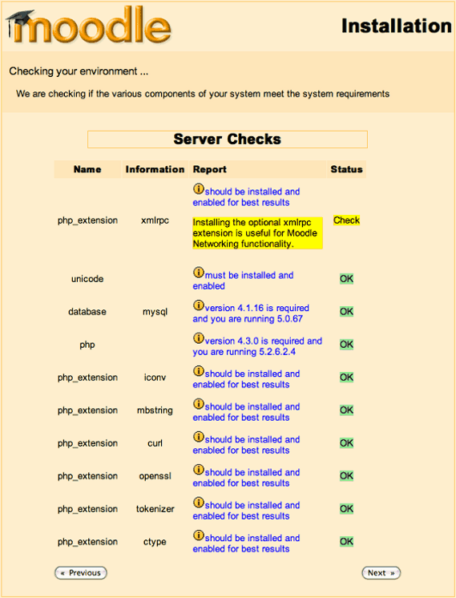
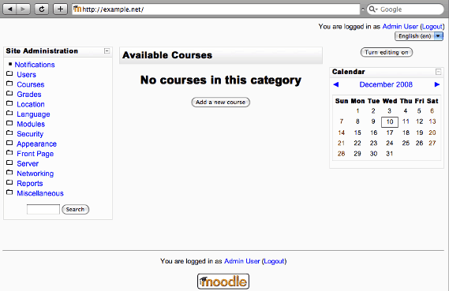

Running Moodle on Cherokee is easy to do. Since Moodle has relatively high requirementes (1GB RAM is recommended), it is actually a very good idea to run a high performance web server and see how things simply start flying.
The only software requirements are a web server, MySQL and PHP with several extensions. You can see the complete list of software requirements at Moodle's site. Don't worry about this point. The installer will detail exactly what are the missing modules, soy you can install whatever you need during that part of the process.
You will need PHP support correctly configured in Cherokee. The default configuration already provides a valid PHP configuration for Cherokee if you have php-cgi installed, but you can follow the appropriate recipe about setting up PHP in case you don't have it available for some reason.
Of course, you will need to download Moodle from the download site.
We will be using moodle-weekly-19, which was the recommended option at the time of writing.
Uncompress it to /var/www/moodle and remember changing ownership to that of the user under which Cherokee will be running.
Setting up Cherokee
There are no special settings on Cherokee's part besides having a working PHP configuration.
Simply set the Document root to /var/www/moodle and you are ready to go. This is done within the Basics tab of the chosen Virtual Server.
Setting up Moodle
First download and uncompress the distributed Moodle release into /var/www/moodle, and create a database suitable for the installation.
Log in to MySQL:
mysql -u root -p
And create the database for Moodle. We will be using the name moodle, the user moodleuser and the password moodlepassword, but you should set up your own.
CREATE DATABASE moodle DEFAULT CHARACTER SET utf8 COLLATE utf8_unicode_ci; GRANT ALL PRIVILEGES ON moodle.* TO moodleuser@localhost IDENTIFIED BY 'moodlepassword'; GRANT ALL PRIVILEGES ON moodle.* TO moodleuser@localhost.localdomain IDENTIFIED BY 'moodlepassword'; FLUSH PRIVILEGES; quit;
You will also have to create a directory for Moodle to save data in it. It must be outside the web document tree.
mkdir /var/www/moodledata chmod 0770 moodledata chown www-data:www-data moodledata
Then point your web browser to http://localhost and follow the instructions provided by the installer. You will only need to provide the above mentioned database information and very little else.

Figure: Installation paths

Figure: Database settings
As mentioned before, checks will be performed to see if the needed PHP modules are available. Make sure to have the ones you'll be needing.

Figure: PHP requirements
This will get you through the whole installation process in around 20 little extra steps give or take. Just click on continue and you should be fine. It will populate your database and get you through the whole installation process.

Figure: Moodle in action
Once you are done, don't forget to set up your cron tasks and configure the backup settings. You can find all the information to create new courses and everything else there is to know in Moodle's documentation.